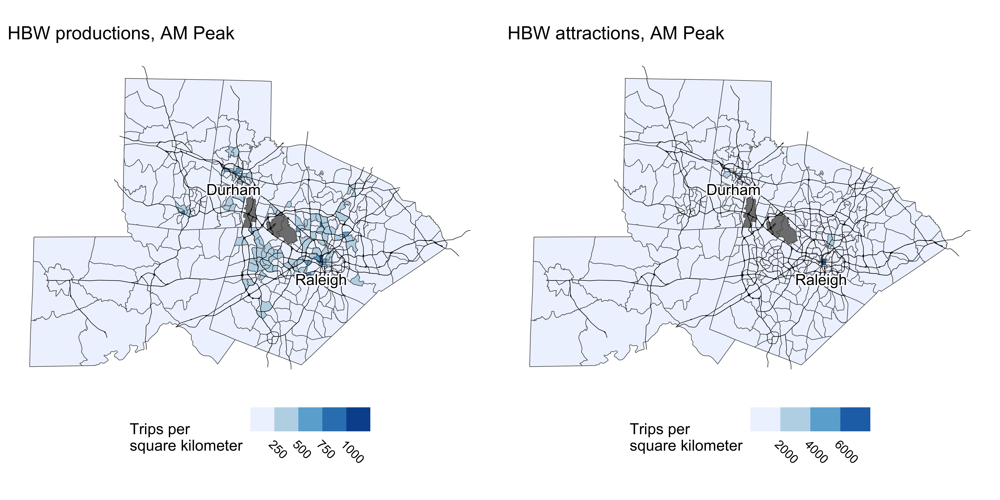
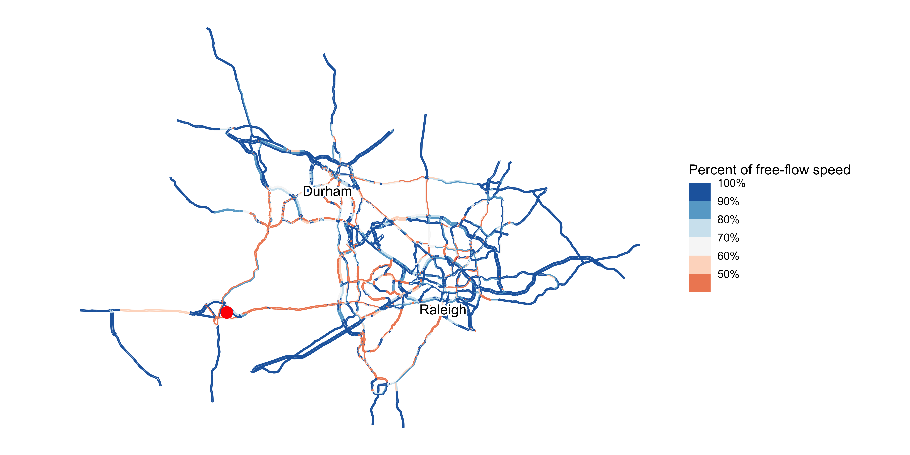

My First Four-Step Model
A simple and accessible introduction to travel demand modeling
Matt Bhagat-Conway
University of North Carolina at Chapel Hill
Why introduce modeling to planners?
- Most planners will never use a model directly
- However, most planners will be consumers of model output
- Giving planners more experience with modeling will improve communication with modelers
- Provide a “healthy skepticism” of model results, but also
- Understand what the model can and can’t do
- Understand how the model can fit into planning processes
- Think of novel ways to use models
Typical experience of planners with models

© xkcd
How we usually teach modeling
- Take transportation planning
- Take statistics
- Take econometrics
- Take choice modeling
- Take GIS
- Work with component models (mode choice, destination choice, etc.)
- Actually run a model (optional)
An alternate approach
- Actually run a model
- Take transportation planning
- Take statistics
- Take econometrics (optional)
- Take choice modeling (optional)
- Take GIS (optional)
- Work with component models (mode choice, destination choice, etc.) (optional)
How do you run a model first?
- In my introductory Planning Methods class, I do one lecture on modeling
- Then, every student uses a very simple model to evaluate a proposed housing development near UNC
- Answer questions about the model, but more importantly about the context
- Mean score 5.96 / 7, including 2 points extra credit
My First Four Step Model
- I implement this model using My First Four Step Model, an R package I developed
- Running the model only requires R and minimal computing power, so students can run it on their laptops
- Even Chromebooks!
- The four steps of the model map directly onto four functions in the package
Running the model: setup
Running the model: trip generation
- The entire trip generation process happens with one function,
trip_generation - Trip generation uses a series of linear regression models, since my students are already familiar with them
- I have students interpret
- coefficients in the regression models
- maps of model output
Trip generation results
Running the model: trip distribution
- Trip distribution is likewise a single function
- I have students interpret
- coefficients in the model
- maps of trip destinations from a tract of their choice
Understanding mode choice
- Mode choice uses a multinomial logit model, which I explain very briefly, but do have students interpret
- I have students interpret the mode shares as well
| Car | Bike | Walk | Transit |
|---|---|---|---|
| 0.92 | 0.01 | 0.05 | 0.03 |
Assignment
- Traffic assignment is also a single function, and we map the results
Forecast congestion, PM Peak
Scenarios
- Models are most useful to evaluate scenarios
- I have students evaluate a scenario based on the proposed Chatham Park developmend
- Adding 20,000 households to Pittsboro, a bedroom community west of Raleigh
Chatham Park: network assignment output
Forecast congestion levels after adding 20,000 households, PM Peak
Network scenarios
- I also have students evaluate the impacts of widening US 15-501, and use this to discuss induced demand
Forecast congestion, PM Peak, with widened 15-501.
Colophon: Estimation
- The model can be estimated anywhere in the US
- Relies on NHTS, Census
Conclusion
All models are wrong, but some are useful.
This one is very wrong, but that makes it more useful.
— George Box, probably
- It is possible to get folks hands-on with a model within a few days
- This leads to more excitement and understanding about modeling
More information, preprint, and instructions:
contact me: mwbc@unc.edu
projects.indicatrix.org/MyFirstFourStepModel